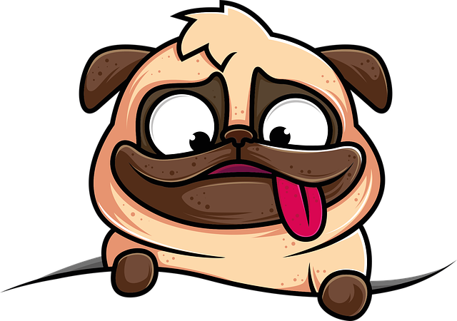

Awicha Familia
Donde Familia cobra significado

Asociaciones
Nuestros colaboradores aportan un porcentaje de sus ganancias a la Fundación para seguir cubriendo los gastos tanto de servicios públicos, alimentarios y médicos veterinarios de la fundación. Por cada compra que realizas con ellos, permites que estos recursos lleguen y podamos continuar con esta labor social.

Naty's Pets
Naty's Pets es una empresa dedicada a la producción, elaboración y comercialización de una gran variedad de productos para la alimentación de mascotas, 100% naturales y saludables para ellos. Además, cuentan con la línea de accesorios y artículos para los amantes de los animales, elaborados con materiales de excelente calidad a precios competitivos. Esta empresa nos ayuda apadrinando la comida de algunos de nuestros rescatados que deben llevar una dieta BARF.
Clinican Vet
¡Nuestros salvavidas en todo momento! y lo decimos literalmente. En esta clínica nos ayudan con todos los casos que llegan a la Fundación. Gracias al convenio que logramos, todos los procedimientos pueden ser realizados a un excelente precio y además, los gatos y perros que son adoptados con nosotras, adquieren los mismos beneficios. Tiene todo tipo de servicios médicos, urgencias, laboratorio, guardería, entre otros.
Arándanos Planeta Azul
Son una empresa ubicada en Guasca, agricultores y campesinos dedicados a cultivar arándanos de la mejor calidad. Esta empresa nos ayuda donando arándanos para la venta y para poder hacer nuestros postres y mermeladas. Con tu compra, también estás ayudando no solo a Awicha sino también a familias campesinas en este hermoso municipio de Cundinamarca. Realizan envíos a Bogotá, Chía, Sopó, La Calera y por supuesto, Guasca.
Estética facial Luz Dary Rubio
Esta empresa es especialmente para mujeres y hombres; se dedica a realizar trabajos de estética facial como maquillaje permanente, ácido hialurónico, botox, etc. Por cada trabajo realizado, esta empresa dona un porcentaje de las ganancias a nuestra fundación.


#Amigosconpatitas